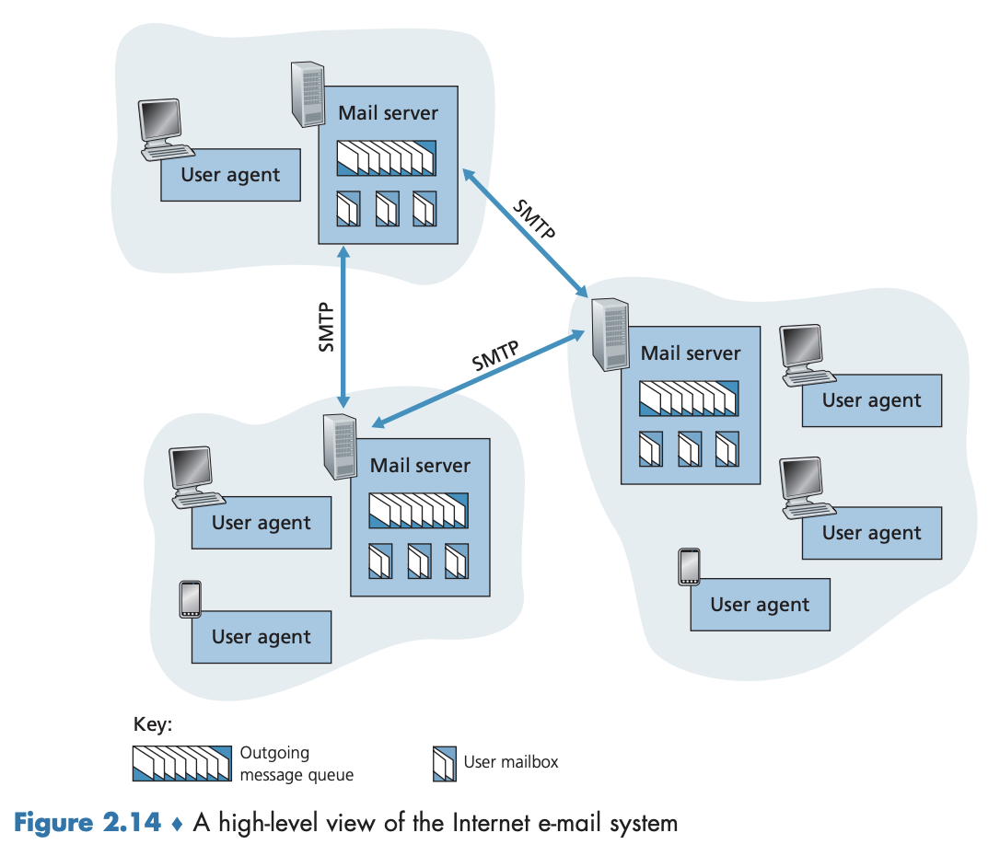
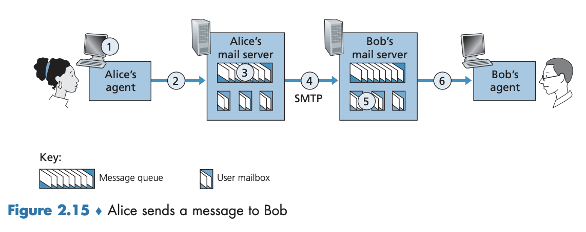
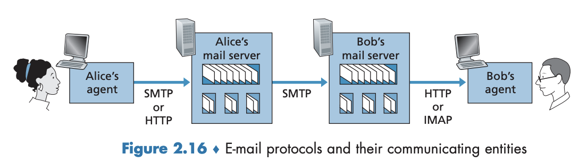

2.3 인터넷 전자메일
전자메일은 인터넷 초기부터 널리 사용되어 왔으며, 오늘날 인터넷에서 가장 중요한 애플리케이션 중 하나이다. 전자메일은 비동기적인 통신 매체로, 사용자들이 자신의 일정에 맞춰 메시지를 주고받을 수 있다. 또한, 전자메일은 분배가 쉽고, 빠르고, 저렴하며, 첨부된 메시지, 하이퍼링크, HTML 포맷 텍스트, 내장된 사진 등 강력한 기능을 제공한다.
주요 구성 요소와 송수신 과정

- 사용자 에이전트 (User Agent): 사용자가 메시지를 읽고, 응답하고, 전달하고, 저장하고, 구성하게 해주는 도구.
- 예시: Microsoft Outlook, Apple Mail, Gmail(웹 및 앱).
- 메일 서버 (Mail Server)
- 메시지(이메일)를 저장하고 관리하는 서버
- 송신자의 메일 서버를 거쳐 수신자의 메일 서버를 거쳐 수신자의 메일박스(mailbox) 에 저장
- 재전송 메커니즘
- 수신자 서버 장애 시, 송신자 메일 서버는 메시지 큐(message queue) 에 저장
- 약 30분마다 재전송 시도
- 여러 날 시도 후 실패하면, 송신자에게 이메일로 실패 통보
- SMTP(Simple Mail Transfer Protocol)
- 인터넷 이메일 전송을 위한 애플리케이션 계층 프로토콜
- TCP의 신뢰적인 데이터 전송 서비스 활용
- SMTP 클라이언트-서버 구조
- 송신자 메일 서버 → SMTP 클라이언트로 동작 (메일 전송)
- 수신자 메일 서버 → SMTP 서버로 동작 (메일 수신)
2.3.1 SMTP
SMTP(Simple Mail Transfer Protocol)는 RFC 5321에 정의된 인터넷 전자메일 전송 프로토콜로, 송신자의 메일 서버에서 수신자의 메일 서버로 메시지를 전달한다. 1982년에 표준화되었으며, 7비트 ASCII 형식을 사용해야 하는 제한이 있어 멀티미디어 데이터를 전송하려면 ASCII로 변환해야 하는 단점이 있다(받은 후에도 ASCII에서 원래 메시지로 변환 작업 필요). → HTTP는 전송 전에 멀티미디어 데이터를 ASCII로 변환하는 것을 요구하지 않음.
SMTP 작동 시나리오는 다음과 같으며, 그림 2.15에 요약되어 있다. 
- 앨리스는 전자메일 사용자 에이전트를 수행하고 밥의 전자메일 주소(예:
bob@someschool.edu)를 제공하고, 메시지를 작성하고 사용자 에이전트에게 메시지를 보내라고 명령한다. - 앨리스의 사용자 에이전트는 메시지를 그녀의 메일 서버에게 보내고 그곳에서 메시지는 메시지 큐에 놓인다.
- 앨리스의 메일 서버에서 동작하는 SMTP의 클라이언트 측은 메시지 큐에 있는 메시지를 본다. 밥의 메일 서버에서 수행되고 있는 SMTP 서버에게 TCP 연결(포트 번호 25)을 설정한다.
- 초기 SMTP 핸드셰이킹 이후에 SMTP 클라이언트는 앨리스의 메시지를 TCP 연결로 보낸다.
- 밥의 메일 서버 호스트에서 SMTP의 서버 측은 메시지를 수신한다. 밥의 메일 서버는 그 메시지를 밥의 메일박스에 놓는다.
- 뱝은 편한 시간에 그 메시지를 읽기 위해 사용자 에이전트를 시동한다.
SMTP는 중간 서버를 거치지 않고 직접 TCP 연결을 사용하여 메시지를 전달하며, 수신자의 서버가 다운되었을 경우 송신자의 서버에서 재시도를 수행한다.
SMTP 클라이언트(C)와 SMTP 서버(S) 사이의 메시지 전달 과정의 예를 보면 아래와 같다.
S: 220 hamburger.edu
C: HELO crepes.fr
S: 250 Hello crepes.fr, pleased to meet you
C: MAIL FROM: <alice@crepes.fr>
s: 250 alice@crepes.fr ... Sender ok
C: RCPT TO: <bob@hamburger.edu>
s: 250 bob@hamburger.edu ... Recipient ok
C: DATA
S: 354 Enter mail, end with "." on a line by itself
C: Do you like ketchup?
C: How about pickles?
C: .
S: 250 Message accepted for delivery
C: QUIT
S: 221 hamburger.edu closing connection
SMTP 클라이언트는 5개 명령을 사용하였는데, 명령어 예시는 다음과 같다:
HELO: 클라이언트가 서버에게 인사MAIL FROM: 발신자 지정RCPT TO: 수신자 지정DATA: 메시지 본문 입력QUIT: 연결 종료
또한 클라이언트는 하나의 점(.)으로 된 라인을 송신하며, 그것은 서버에게 메시지의 끝을 나타낸다(ASCII에서 각 메시지는 CRLF.CRLF로 끝나며, CR과 LF는 각각 ’carriage return’과 ’line feed’의 약자다). 서버는 각 명령에 응답하며, 각 응답에는 응답 코드와 영문 설명(옵션)이 있다.
SMTP는 지속적인 TCP 연결을 사용하여 동일한 수신 서버로 여러 메시지를 전송할 수 있다.
텔넷을 사용하여 SMTP 서버와 직접 대화할 수 있다.
telnet serverName 25
serverName은 원격 메일 서버의 이름이다. 이 명령을 실행하면, 여러분의 로컬 호스트와 메일 서버 사이에 TCP 연결이 설정된다.
2.3.2 메일 메시지 포맷
메일 메시지는 일반 우편처럼 헤더와 본문으로 구성된다. 헤더에는 송신자(From:), 수신자(To:), 제목(Subject:) 등의 정보를 포함하며, RFC 5322에 따라 정의된다. 헤더와 본문은 빈 줄(CRLF)로 구분된다. 헤더 정보는 SMTP 프로토콜의 명령과는 다르며, 메일 메시지 자체의 일부이다. SMTP를 통해 이러한 헤더가 포함된 메시지를 전송할 수 있다.
From: alice@crepes.fr
To: bob@hamburger.edu
Subject: Searching for the meaning of life.
2.3.3 메일 접속 프로토콜
SMTP는 송신자의 메일 서버에서 수신자의 메일 서버로 메시지를 전달하지만, 수신자가 자신의 PC나 스마트폰에서 직접 메일을 관리하는 것은 비효율적이다. 대신, 사용자는 항상 켜져 있는 공유 메일 서버에 저장된 메일을 확인한다. 
전자메일 메시지 경로
- 앨리스(발신자)의 사용자 에이전트 → SMTP/HTTP → 앨리스의 메일 서버
- 앨리스의 메일 서버 → SMTP → 밥(수신자)의 메일 서버
- 발신자의 메일 서버가 중계 역할을 하여 목적지 메일 서버에 도달할 수 있도록 함
- 목적지 메일 서버가 준비될 때까지 일정 주기로 재전송
수신자가 메일을 확인하는 방법
- 웹 기반 메일 서비스(Gmail 등)
- HTTP를 사용하여 메일 서버에 접속하여 확인
- 메일 서버는 SMTP와 HTTP 인터페이스를 지원해야 함
- 메일 클라이언트(Outlook 등)
- 인터넷 메일 접속 프로토콜 (Internet Mail Access Protocol, IMAP, RFC 3501) 사용
- 서버에 저장된 폴더를 관리하며, 메시지 이동·삭제·표시 기능 제공
SMTP는 푸시(push) 프로토콜이므로, 수신자가 메일을 가져오는 데는 적합하지 않다. 대신, HTTP 또는 IMAP을 사용하여 메일을 확인한다.